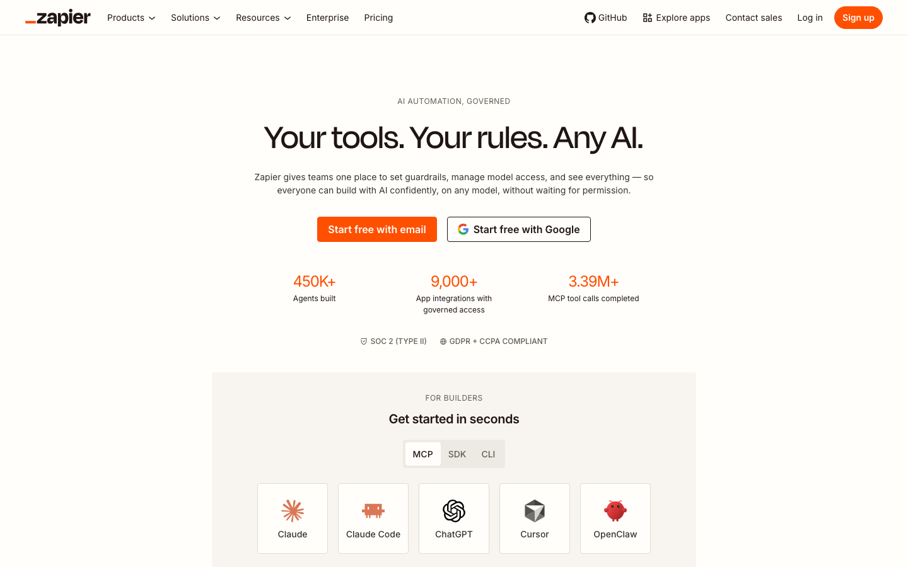
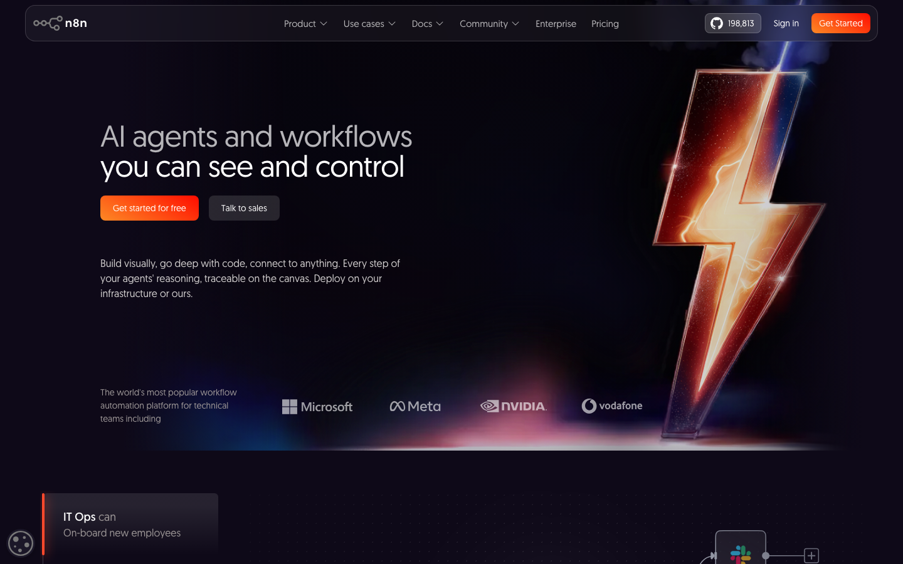
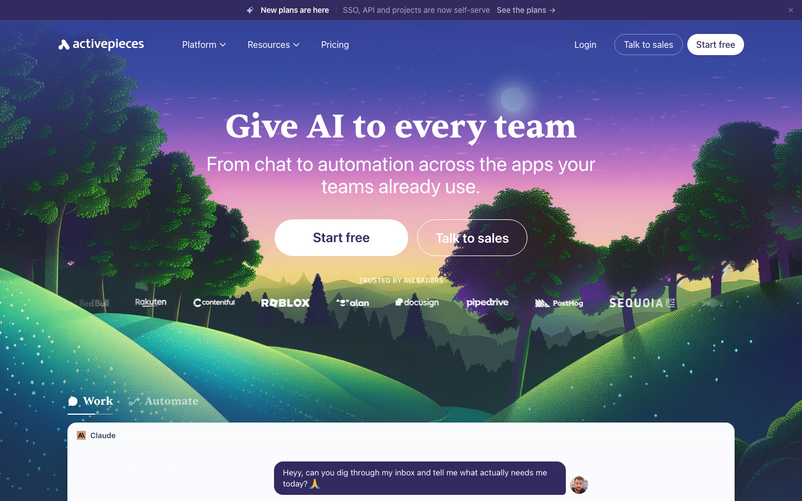
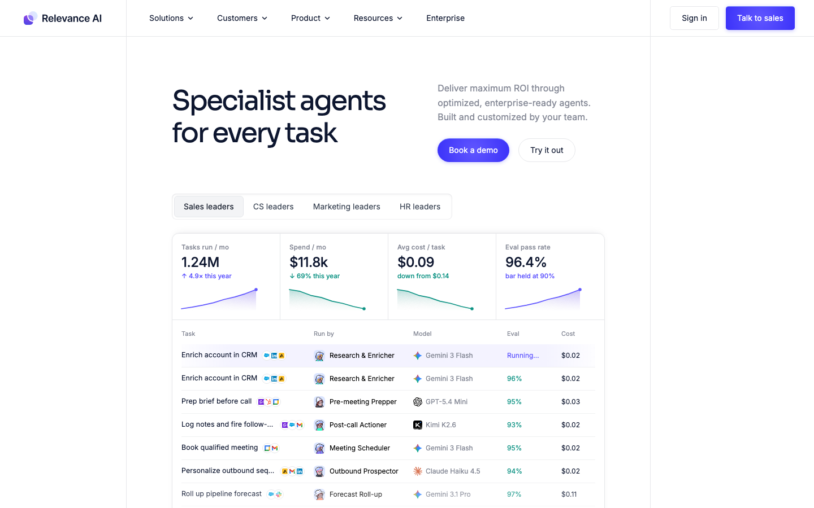

AI AUTOMATION / 比較ガイド
AI業務自動化ツール比較｜Zapier・n8n・Activepieces・Relevance AI【2026年】
AI業務自動化は、アプリをすぐにつなぐのか、細かな処理を組むのか、AIエージェントを担当者のように動かすのかで選択が変わります。公式の料金・usageと国内外レビューを突き合わせ、第一候補と選ばない条件まで一つの比較表にまとめました。
- Zapier：Freeは月100 tasks、Professionalは月19.99ドルから。非技術チームが9,000以上のアプリをつなぐなら強い一方、高頻度処理をtasks課金で回したい人には不向きです。
- n8n：Starterは年払いで月20ユーロ、月2,500 executions・各execution内はsteps無制限。セルフホストや複雑な分岐に強い反面、保守できる技術担当がいない組織には向きません。
- Activepieces：10 active flowsまで無料、以降はactive flowあたり月5ドルでruns無制限。少数フローを大量実行するならコスパが良く、連携先の多さを最優先する人には候補が狭くなります。
- Relevance AI：Freeは月200 Actions、Proは年払い月19ドルで2,500 Actionsと月20ドルのVendor Credits。AIエージェント中心なら有力ですが、単純なアプリ連携だけなら割高になりやすいです。
料金・usage・コスパ比較（2026年8月3日時点）
比較単位をそろえるため、月に1,000件の定型処理を一つのフローで動かす小規模チームを想定します。ただし、tasks・executions・active flows・Actionsは意味が違うため、単純な月額順ではなく「どの単位で増えるか」をコスパの中心に置きました。
| サービス（公式） | 代表プラン・月額 | usage | 実効コスト・コスパ | 選ばない条件 |
|---|---|---|---|---|
| Zapier | Free $0/月、Professional $19.99/月から | Freeは100 tasks/月。処理1件ごとにtaskを消費 | 無料枠内なら$0。1,000件規模ではtask上限を超えやすく、回数課金の予算が必要 | 高頻度処理を固定費だけで運用したい場合 |
| n8n | Starter €20/月（年払い） | 2,500 workflow executions/月、1 execution内のstepsは無制限 | 枠を使い切れば約€0.008/execution。処理段数が増えても単位が増えにくい | セルフホスト・権限・ログを保守できる人がいない場合 |
| Activepieces | 10 active flowsまで無料、以降$5/active flow/月 | runs無制限。AI agents、MCP servers、tablesを含む | 10フロー以内なら実行回数は$0。フローを11本に増やすと公開料金では月$55相当 | 数百種類の連携アプリを最初から網羅したい場合 |
| Relevance AI | Free $0/月、Pro $19/月（年払い）から | Free 200 Actions/月。Pro 2,500 Actions + Vendor Credits $20/月 | Action数とVendor Creditsの組み合わせ。LLM・外部ツール利用量を一律の1件単価にはできない | 決まったアプリ間の転送だけを安価に処理したい場合 |
コスパの見方：Zapierは接続先の広さを買うサービス、n8nはexecution内の処理段数をまとめるサービス、Activepiecesは少数flowのruns無制限を買うサービス、Relevance AIはAIエージェントのActionsと外部モデル費をまとめるサービスです。月額だけで並べると、用途を誤ります。
4サービスの実力と口コミ

Zapier：アプリ連携を最短で始める
公式情報：9,000以上のアプリ連携と、Free 100 tasks/月、Professional 19.99ドル/月からという分かりやすい入口が特徴です。トリガー、処理、通知を画面上で組めるため、コードを書かずに営業・フォーム・メールの流れを一本化できます。
レビュー傾向：G2とCapterraでは、連携先の多さ、初期設定のしやすさ、テンプレートが評価されています。一方で、複数ステップや大量タスクでは料金が膨らみやすいという声も共通します。業務の最初の一歩には強いですが、毎日何万件も処理する基盤には料金設計が合いません。

n8n：複雑な処理とセルフホスト
公式情報：CloudのStarterは年払い月20ユーロで2,500 workflow executions、各execution内のstepsは無制限です。Community Editionをセルフホストでき、HTTP・データ変換・AIノードを細かく組み合わせられます。
レビュー傾向：G2とCapterraでは、柔軟性、連携、セルフホストが評価される一方、APIやコードに慣れていない利用者には学習負担があるという傾向が目立ちます。TechRadarが過去に報じた脆弱性のように、セルフホストではアップデートと公開範囲の管理も必要です。技術担当が運用できない場合は、導入後の保守コストが本体価格を上回ります。

Activepieces：フロー数を抑えて大量実行
公式情報：Standardは10 active flowsまで無料で、11本目以降はactive flowごとに月5ドル。runsは無制限で、AI agents、MCP servers、tablesも含まれます。Community Editionを自分の環境で動かす選択肢もあります。
レビュー傾向：G2やProduct Huntでは、操作の分かりやすさ、オープンソース、手頃な価格が好評です。反対に、確立された競合より連携先が少ない、英語のチュートリアルが中心という声があります。少数の定型フローを大量に動かす用途では強く、特殊なSaaS連携を最初から必要とする場合は候補から外れます。

Relevance AI：AIエージェントを業務担当にする
公式情報：Freeは月200 Actions、Proは年払い月19ドルからで2,500 Actionsと月20ドルのVendor Creditsを含みます。単発の文章生成ではなく、調査、営業リスト作成、問い合わせ処理などを複数の専門エージェントに分けて運用する設計です。
レビュー傾向：G2や独立レビューでは、エージェントの構成自由度、テンプレート、複数モデルを束ねる柔軟性が評価されています。一方、Actionsと外部モデル費の見積もりが直感的でないという指摘があります。単純な転送や通知の自動化だけなら、ZapierやActivepiecesの方が費用と構成を説明しやすいです。
強み・弱み比較表
| サービス | 強み | 弱み | 向く人 | 向かない人 |
|---|---|---|---|---|
| Zapier | 9,000以上のアプリ、テンプレート、ノーコード | tasks課金、複雑な処理・大量実行のコスト | 営業・マーケ担当が自分で連携を作るチーム | 毎日大量のイベントを低い固定費で処理するチーム |
| n8n | セルフホスト、分岐、API・AIノード、execution単位 | 学習・保守、公開範囲と更新の管理 | 技術担当がデータ処理を細かく設計するチーム | 運用担当を置けず完全ノーコードだけを求めるチーム |
| Activepieces | 10 flows無料、runs無制限、MCP・AI agents | 連携先の幅、英語情報、企業向け機能の厚み | 少数フローを大量実行する小規模チーム | 特殊なSaaS連携と大規模ガバナンスを同時に求める企業 |
| Relevance AI | 専門AIエージェント、ツール・モデルの組み合わせ | Actions・Vendor Creditsの予算管理、単純連携には過剰 | 営業・調査・CSをエージェント単位で分担したいチーム | 固定手順の通知・転送だけを安く動かしたいチーム |
用途別の決定ルール
Zapier
フォーム、CRM、メール、Slackを今週中につなぐなら第一候補。高頻度イベントが中心なら選ばない。
n8n
API、分岐、データ整形、セルフホストを一つのワークフローにまとめるなら第一候補。保守担当がいないなら選ばない。
Activepieces
10フロー以内でrunsを気にせず動かすなら第一候補。連携アプリの網羅性が最重要なら選ばない。
Relevance AI
調査、営業、問い合わせを専門エージェントに分けるなら第一候補。単純な通知だけなら選ばない。
迷った場合は「最初に自動化する一業務」と「月の実行単位」を先に決めます。アプリ間の転送ならZapierまたはActivepieces、処理を細かく制御するならn8n、判断や調査を任せるならRelevance AIという順で候補を絞れます。
導入の設計
対象業務を1つに絞る
問い合わせ、見積作成、営業リサーチなど、開始条件と完了条件を一文で定義します。
トリガーから出力まで描く
フォームやメールを起点に、AI処理、データ保存、通知の順でつなぎ、各サービスのusage単位を割り当てます。
成果指標を一つ置く
処理件数、対応時間、商談化率など、導入前後で変化を読み取れる指標を一つだけ追います。
ツールを先に契約するより、業務の入力・処理・出力を先に決めた方が、不要な有料枠と保守負担を避けられます。
- Zapier料金 / Zapier G2 / Zapier Capterra
- n8n料金 / n8n G2 / n8n Capterra / TechRadar
- Activepieces料金 / Activepieces G2 / Product Hunt
- Relevance AI料金 / Relevance AI G2 / 独立レビュー
公式価格・usageとレビューは2026年8月3日に取得しました。検索ボリュームと難易度の公開数値は利用できなかったため、記事企画ではSERPの商用性、比較記事の存在、候補サービスの一次情報量を需要プロキシとして扱っています。
よくある質問
無料で始めるならどれですか？
Zapierは月100 tasks、Activepiecesは10 active flows、Relevance AIは月200 Actionsまで無料です。n8nはCommunity Editionをセルフホストできます。非技術チームはZapier、少数フローの大量実行はActivepieces、AIエージェントはRelevance AI、技術担当がいる場合はn8nから選ぶと迷いません。
n8nとActivepiecesはどう使い分けますか？
APIやデータ変換を細かく組み、セルフホストも選びたいならn8n。10本前後のフローをノーコードで管理し、runs無制限を活かしたいならActivepiecesです。保守担当がいない場合はn8nを選ばない判断になります。
AIエージェントを業務に組み込むならどれですか？
営業リサーチや問い合わせ対応を専門エージェントに分担させるならRelevance AI。既存アプリの間にAI処理を一つ足すだけならZapierまたはActivepiecesの方が構成を説明しやすいです。
AI顧問室では何をしてくれますか？
候補サービスの比較だけでなく、対象業務の入力・処理・出力を整理し、選んだAIを実際の業務フローへ組み込みます。